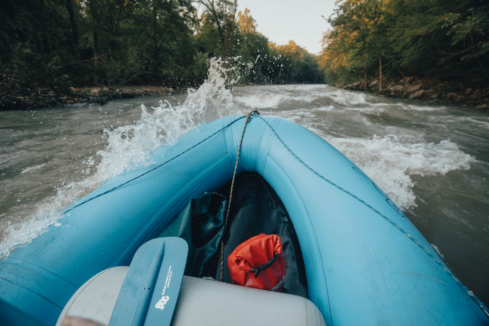
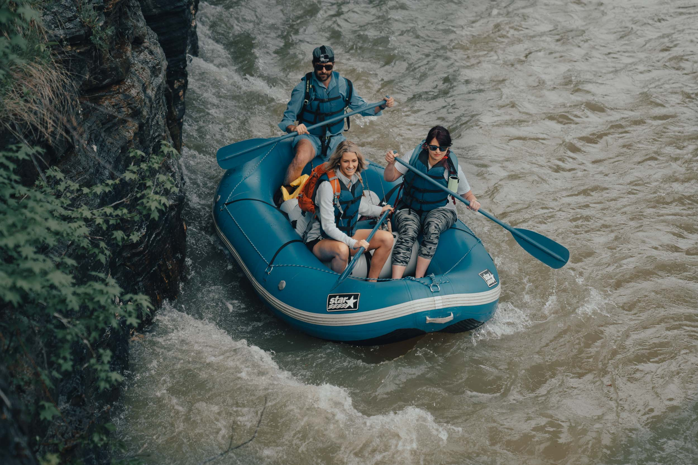

Canoes
We rent Buffalo Canoes, which are manufactured right here in Newton County, Arkansas.



Welcome to your gateway to the natural beauty of the Buffalo National River. Whether you're planning a peaceful cabin retreat or a day out on the water, we make it easy to explore, unwind, and reconnect with the outdoors.
From scenic floats to cozy stays, every experience is designed with care—for you and for the land we call home.
We rent Buffalo Canoes, which are manufactured right here in Newton County, Arkansas.
Bear Ridge offers guests a cozy, fully furnished cabin for a romantic and/or relaxing getaway in upper Buffalo River country.
Discover who we are and what drives our passion for the river.
Have questions or ready to book your adventure? We'd love to hear from you! Reach out and we'll get back to you as soon as possible.
We’ve taken the guesswork out of the equation for you! Check out our Water Level gauge to make sure you’re good to float!
Explore the rich heritage of the Ponca area, from its Native American roots to its place as one of Arkansas's most beloved natural destinations.